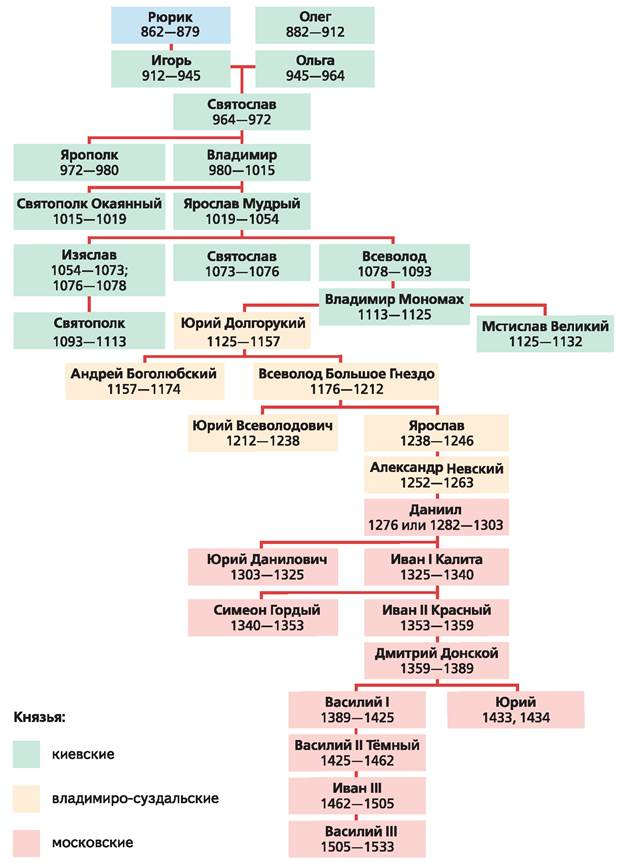
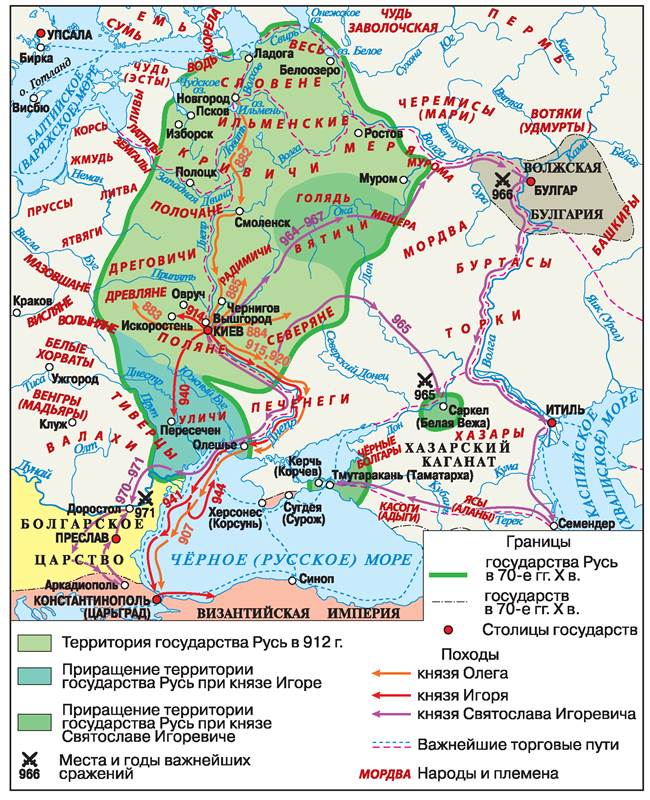
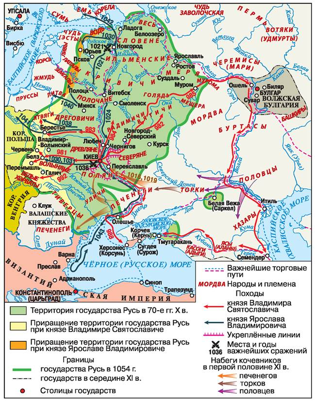
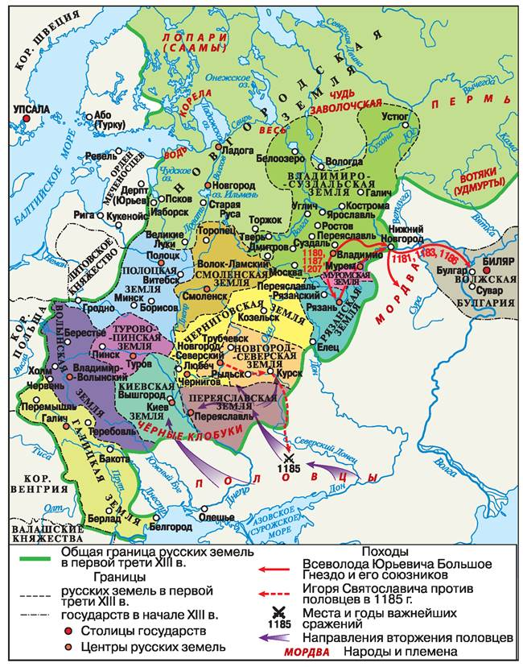
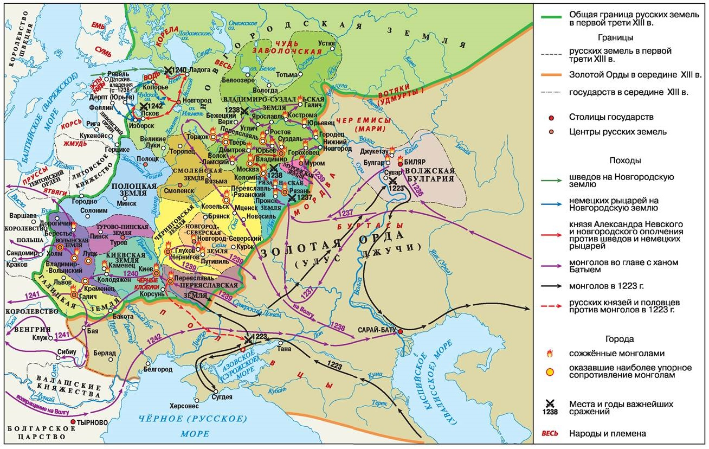

ДИНАСТИЯ РЮРИКОВИЧЕЙ В IX — НАЧАЛЕ XVI в.

862 г. — дата образования государства Русь. Призвание Рюрика
882 г. — захват Олегом Киева
907 г. — поход Олега на Константинополь
911 г. — договор Руси с Византией
941, 944 гг. — походы Игоря на Константинополь, договоры Руси с Византией
964—972 гг. — походы Святослава
978/980—1015 гг. — княжение Владимира Святославича в Киеве
988 г. — Крещение Руси
1016—1018, 1019—1054 гг. — княжение Ярослава Мудрого
XI в. — Русская Правда (Краткая редакция)
1097 г. — Любечский съезд князей
1113—1125 гг. — княжение в Киеве Владимира Мономаха
Начало XII в. — создание «Повести временных лет»
XII в. — Русская Правда (Пространная редакция)
1147 г. — первое упоминание Москвы в летописях
1185 г. — поход Игоря Святославича на половцев
1223 г. — битва на реке Калке
1237—1241 гг. — завоевание Руси ханом Батыем
1240 г., 15 июля — Невская битва
1242 г., 5 апреля — День победы русских воинов князя Александра Невского над немецкими рыцарями на Чудском озере (Ледовое побоище)
1242—1243 гг. — образование Улуса Джучи (Золотой Орды)
1325—1340 гг. — княжение Ивана Калиты
1327 г. — антиордынское восстание в Твери
1359—1389 гг. — княжение Дмитрия Донского
1378 г., 11 августа — битва на реке Воже
1380 г., 8 сентября — День победы русских полков во главе с великим князем Дмитрием Донским над войском Мамая (Куликовская битва)
1382 г. — разорение Москвы Тохтамышем
1389—1425 гг. — княжение Василия I
1395 г. — разгром Золотой Орды Тимуром
1410 г., 15 июля — Грюнвальдская битва
1425—1462 гг. — княжение Василия II
1425—1453 гг. — междоусобная война в Московском княжестве
1448 г. — установление автокефалии Русской церкви
1462—1505 гг. — княжение Ивана III
1478 г. — включение Новгородской земли в состав Русского государства
1480 г. — Стояние на реке Угре. Падение ордынского владычества
1485 г. — включение Тверского княжества в состав Русского государства
1497 г. — принятие общерусского Судебника
1505—1533 гг. — княжение Василия III
1510 г. — включение Псковской земли в состав Русского государства
1514 г. — возвращение Смоленской земли в состав Русского государства
1521 г. — включение Рязанского княжества в состав Русского государства
ИНТЕРНЕТ-РЕСУРСЫ
Федеральный портал истории России
история.рф
Большая российская энциклопедия
www.bigenc.ru
Портал культурного наследия и традиций России
культура.рф
Российская государственная библиотека
www.rsl.ru
Российское общество «Знание»
www.znanierussia.ru
Россия — моя история. Исторический мультимедийный парк
myhistorypark.ru
Российское историческое общество
www.historyrussia.org
Лекторий «Достоевский»
dostoverno.ru
Российское военноисторическое общество
rvio.histrf.ru
Президентская библиотека им. Б. Н. Ельцина
www.prlib.ru
ПРИЛОЖЕНИЕ. ИСТОРИЧЕСКИЕ КАРТЫ

Карта 1. Русь в IX—X вв.

Карта 2. Русь в конце X—XI в.

Карта 3. Русь в период раздробленности. 30-е гг. XII в. — первая треть XIII в.

Карта 4. Нашествие на Русь с востока и запада